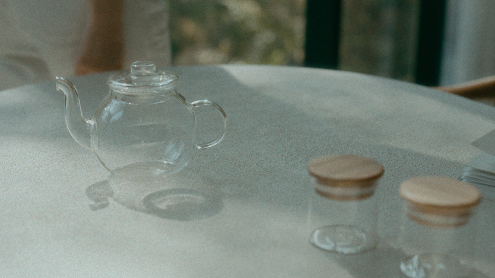
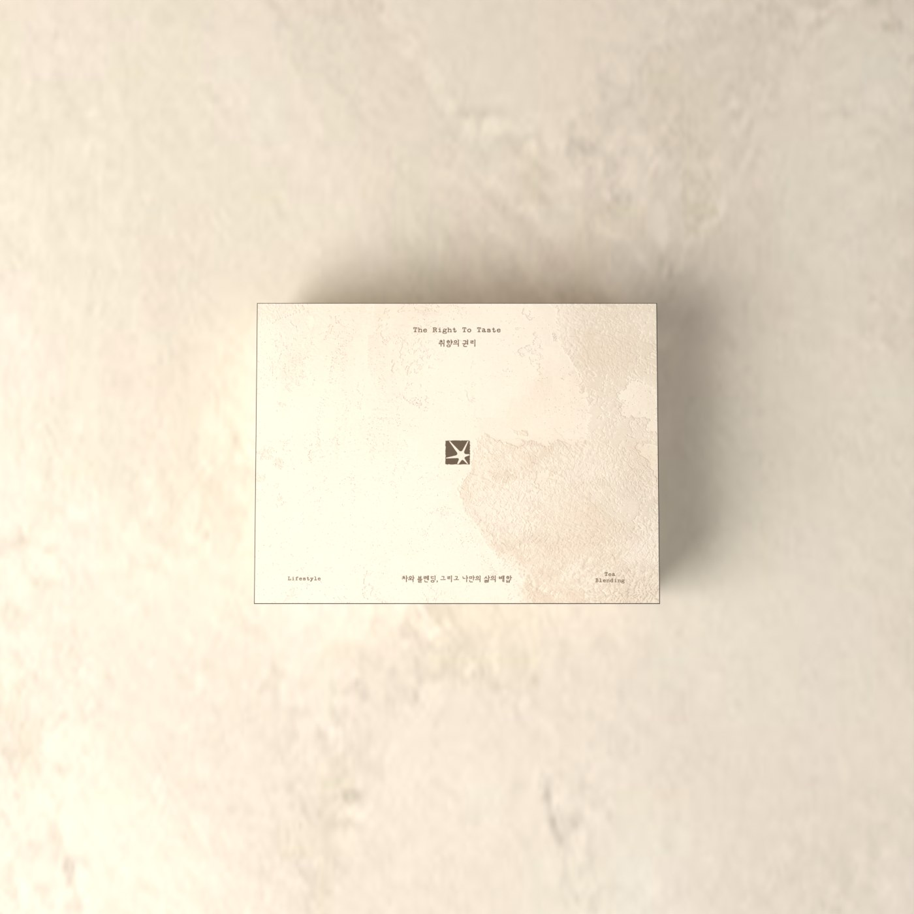
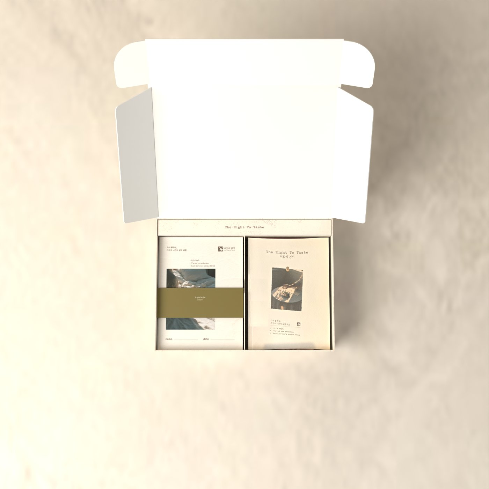
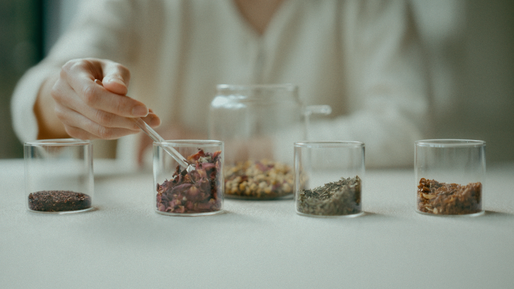
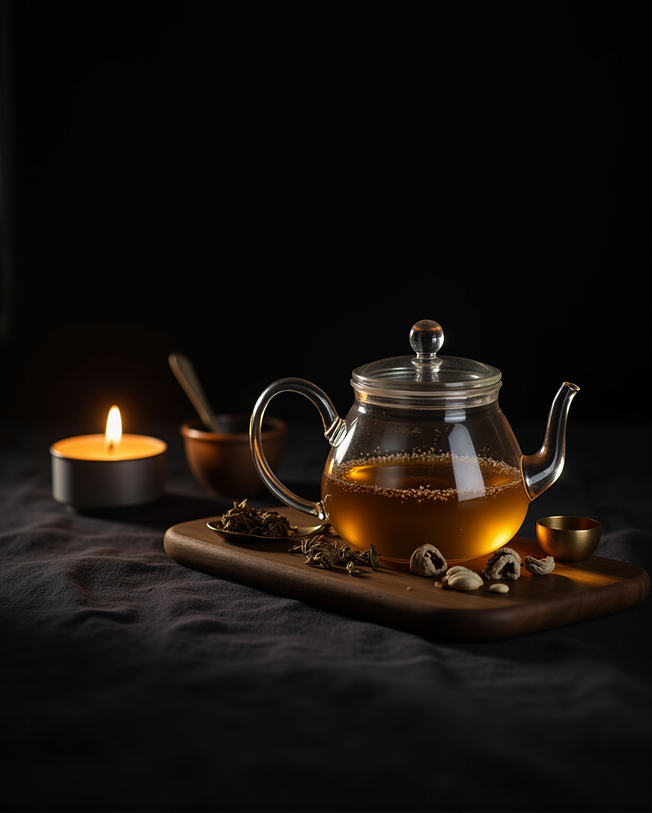

같은 재료,
비율만 바꿨을 뿐인데.
오늘의 한 잔은 내가 정합니다.
왼쪽은 캐모마일 두 스푼,
오른쪽은 장미 한 스푼 더.
같은 재료로 우린 두 잔. 같은 잔, 같은 빛.
- 01
티백을 뜯을 때마다
매번 같은 맛이라 지겨웠던 적, - 02
블렌딩 카페는 좋았지만
매번 시간 내서 찾아가긴 어려웠던 적, - 03
선물로 차를 고르다가
결국 무난한 걸로 타협했던 적.
그런데 문득 궁금해졌습니다.

나는 어떤 차를
좋아하는 사람일까?
상자를 열면,
여섯 가지 재료가 기다립니다.
재료를 고르고, 섞고, 우리는 데 필요한 것을
하나의 키트에 담았습니다.

Fill원료를 빈 티백에 담습니다.

Brew유리 티팟과 원료 병, 창가 테이블.
구성품 9종
 A
B
C
D
A
B
C
D


접혀 있던 책을 세우면 열두 면이 한 줄로 펼쳐집니다.
 1
6
7
1
6
7
펼치면 원료 파우치 면과 엽서 창 면이 번갈아 이어집니다.
키트 하나에 담긴 것
두 버전을 합친 재료 가짓수
저녁에도 편하게
150ml 기준, 키트 하나로
HERB와 GRAIN, 두 가지 시작점
어느 쪽이 더
당신의 취향인가요?

레몬밤 · 히비스커스 · 페퍼민트
유자 · 장미 · 캐모마일
향과 색, 감각으로 즐기는
화사한 허브 블렌딩
새로운 향을 탐색하는 시간을 좋아하는 분에게

둥굴레 · 찰수수 · 단팥
현미 · 민들레 뿌리 · 보리
구수함과 로스팅의 깊이,
커피처럼 즐기는 곡물 블렌딩
커피를 마시던 시간에 새로운 한 잔을 찾는 분에게
둘 다 궁금하다면, SET
말보다 경험으로 마음을 전하고 싶은 분에게
원료 노트 12

레몬과 풋잎을 떠올리게 하는 산뜻함. 첫 향을 밝게 엽니다.

붉은 과일을 연상시키는 선명한 산미. 수색을 바꿉니다.

차갑고 깨끗한 상쾌함. 소량부터.

밝은 감귤 껍질 향과 은은한 쌉싸름함.

우아하고 풍성한 꽃향. 긴 아로마.

사과와 꿀을 연상시키는 부드러운 향.

부드러운 볶은 뿌리와 은은한 단맛. 바디감을 둥글게.

담백하고 순한 곡물의 구수함. 뿌리 원료를 받쳐 줍니다.

볶은 팥의 고소하고 부드러운 여운.

볶은 쌀의 담백하고 고소한 향. 바디를 받쳐 줍니다.

흙·나무·커피·카카오를 연상시키는 깊은 볶음 향. 중심 원료.

익숙하고 선명한 볶은 곡물 향.
“그런데 저는
블렌딩을 해본 적이 없어요.”
괜찮습니다.
전문가 레시피 그대로
하나를 더하거나 덜어서
나의 맛으로
한 장을 넘기면 원료, 다음 장을 넘기면 그 원료의 엽서.
향을 맡고, 고르고, 섞고, 우리고, 기록합니다.
오늘은 조금 더
향긋하게.
어떤 날은 조금 더
고소하게.
같은 재료도 비율이 달라지면
전혀 다른 한 잔이 됩니다.
정답은 없습니다.
취향은 그렇게 발견됩니다.
처음엔,
전문가의 비율에서 시작하세요.
시음으로 고른 전문가 레시피 21가지가 함께 들어 있어요.
허브 10가지, 곡물 3가지, 허브와 곡물을 섞은 8가지.
3~5 MIN
유자의 밝은 첫 향 뒤에 깊은 볶음 향과 부드러운 고소함이 이어지는 시트러스 로스트.
7~10 MIN
깊게 볶은 듯한 첫 향에 단팥과 찰수수의 부드러운 구수함이 이어집니다.
10 MIN +
그리고 그다음 레시피는 당신의 것입니다.
모르겠어요.”
처음이에요.”
마시고 싶어요.”
그래서 만들었습니다.
5개 질문으로 찾는
나의 첫 블렌딩
「나의 취향찾기」에 답하면 전문가 레시피 21가지 중
지금 나에게 맞는 한 잔과, 그 레시피에 필요한 키트를 알려 드려요.
카페에 들어섰어요.
손이 먼저 가는 메뉴는?
장미 넝쿨 아래 벤치
캐모마일 2스푼
장미 1스푼
레몬밤 1스푼
물 150ml, 95~100°C · 3~5분
결과는 다섯 축으로
한눈에.
향 · 바디 · 단맛 · 고소함 · 산뜻함.
지금의 나에게 맞는 한 잔이 어디에 놓이는지 보여 드려요.

맛보고 끝내지 않습니다.
좋았던 향,
마음에 들었던 조합,
다시 만들고 싶은 비율을 노트에 남깁니다.
블렌딩 노트 — 질문을 따라 읽고, 빈 줄에 나의 배합을 적습니다.
차를 기록하는 것이 아니라
나의 취향을 기록합니다.
「취향의 권리」는
차 블렌딩의 원칙과 경험을
바탕으로 설계했습니다.


20년 가까이 차·식음료 상품개발과 수출을 해 온 블렌더.
저서 『11시와 4시 나는 차를 마신다』, 『Life in My Teacup』
전문가에게는 원칙을,
소비자에게는 취향의 권리를.
먼저 경험한 사람들
후기는 제품을 제공받은 체험단이 직접 작성합니다.

오픈 전 체험단 20명의 첫 잔 이야기를 이 자리에 싣습니다.

오픈 전 체험단 20명의 첫 잔 이야기를 이 자리에 싣습니다.

오픈 전 체험단 20명의 첫 잔 이야기를 이 자리에 싣습니다.
혼자 즐기는 시간에도,
함께 차를 만들어보는 시간에도,
좋아하는 사람에게 건네는 선물에도.
물건이 아니라
하나의 경험을 선물합니다.


와디즈에서 처음 만나는
「취향의 권리」
지금 시작하면, 가장 좋은 조건으로.


밤의 약방에서 우리는 한 잔
2개 구매 시 함께 드리는 단팥차 샘플
- 원료 3팩 랜덤 추가 증정
- 스테인리스 인퓨저 증정
- 2개 구매 시 단팥차 샘플 증정
- 무료배송
- 스테인리스 인퓨저 증정
- 2개 구매 시 단팥차 샘플 증정
- 무료배송
- 스테인리스 인퓨저 증정
- 2개 구매 시 단팥차 샘플 증정
- 2개 구매 시 무료배송
- VER.1 HERB + VER.2 GRAIN
- 블렌딩 노트 2권
- 교차 레시피 가이드
HERB와 GRAIN을 함께 담으면 두 가지 취향을 모두 경험하고, 단팥차 샘플도 함께 받습니다.
당신이 발견한 비율을
들려주세요.
레시피를 공유해 주신 분 중 추첨으로 10명에게
취향의 권리 키트를 만드는 티 브랜드,
티아포테카의 차 4종(10만 원 상당)을 선물합니다.

티아포테카 차 4종
- — 단팥차
- — 골든 모과
- — 두 가지 시그니처
키트로 나만의 블렌딩 레시피를 완성해요.
블렌딩 노트 사진과 레시피로 후기를 써 주세요.
@right.totaste 팔로우 후 같은 사진을 올리고 태그해 주세요.
#취향의권리 #나만의블렌딩 #이벤트참여
댓글에 와디즈 서포터 닉네임을 남겨 주세요.
당신의 한 잔이
또 다른 누군가의 취향에 영감이 됩니다.
자주 묻는 질문
- Q
블렌딩 경험이 전혀 없는데 괜찮을까요?
네. 처음에는 전문가 추천 레시피를 따라 만들어보세요. 익숙해지면 재료 하나를 더하거나 덜어보고, 비율을 조금씩 바꾸면서 나만의 블렌딩을 만들 수 있습니다.
- Q
카페인이 있나요?
허브와 곡물로만 구성했습니다. 카페인 표시는 펀딩 오픈 시 함께 안내드립니다. 저녁이나 늦은 밤에도 편하게 즐길 수 있어요.
- Q
배송은 언제 되나요?
펀딩 종료 후 순차 발송됩니다.
- Q
다 쓴 뒤 재구매는 어떻게 하나요?
취향의권리.com에서 마음에 든 원료만 골라 낱개로 구매할 수 있어요.
- Q
교환·환불이 가능한가요?
펀딩 기간 중에는 언제든 취소할 수 있습니다. 식품 특성상 개봉 후 단순 변심 반품은 어렵고, 파손이나 불량은 수령 후 7일 이내 사진과 함께 문의 주시면 교환해 드립니다.
- Q
보관은 어떻게 하나요?
빛과 습기를 피해 보관하고, 향이 가장 좋은 한 달 안에 즐겨 주세요.
제품 상세정보
| 식품의 유형 | 펀딩 오픈 시 표기 |
|---|---|
| 내용량 | 펀딩 오픈 시 표기 |
| 원재료명 | 펀딩 오픈 시 표기 |
| 제조원 · 판매원 | 펀딩 오픈 시 표기 |
| 보관방법 | 펀딩 오픈 시 표기 |
| 소비기한 | 펀딩 오픈 시 표기 |
당신은 어떤 맛을
좋아하는 사람인가요?
좋아하는 것이 더 좋은 일상이 되는 삶.
the right to taste · tea apotheca